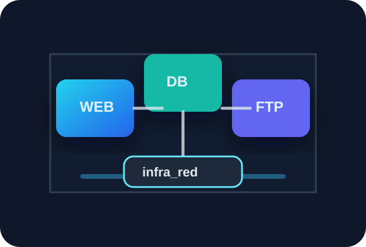

Web seguro
Imagen Alpine personalizada, sin server tokens y ejecutando Nginx con usuario no administrativo.
SysAdmin-2
Servidor web, PostgreSQL y FTP conviven en una red bridge dedicada con almacenamiento persistente y limites de recursos.

Imagen Alpine personalizada, sin server tokens y ejecutando Nginx con usuario no administrativo.
PostgreSQL usa el volumen db_data y genera respaldos automatizados en el host.
El volumen web_content se comparte con FTP para publicar archivos cargados en /uploads.
Suba archivos al directorio uploads por FTP y luego consultelos en /uploads/.